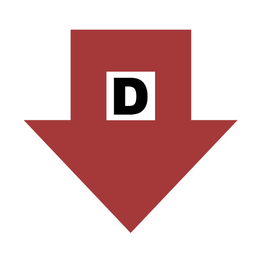

<div class="td-demo">
  <!-- ――― MARK-UP ――― -->
  <div id="countdown-wrapper">
    <div id="countdown-container"></div>
    <!-- interval label (absolute-positioned) -->
    <div id="interval-indicator"></div>
  </div>

  <!-- ――― STYLES ――― -->
  <style>
    /* make the demo area the positioning context */
    .td-demo {
      position: relative;
    }

    #countdown-wrapper {
      display: flex;
      align-items: center;
      justify-content: center;
      height: 600px;
      width: 100%;
      text-align: center;
    }

    #countdown-container {
      font-size: 5em;
    }

    #interval-indicator {
      position: absolute;
      top: 10px;
      right: 0px;
      font-size: 0.8em;
      font-family: sans-serif;
      color: gray;
    }

    .arrow-container {
      display: flex;
      flex-direction: column;
      justify-content: center;
      gap: 30px;
      margin: auto;
      max-height: 500px;
    }

    .arrow {
      width: 200px;
      transition: transform 0.2s ease;
      cursor: pointer;
    }
    .arrow:hover {
      transform: scale(1.2) translateY(-5px);
    }

    /* feedback text */
    .feedback {
      font-family: system-ui, -apple-system, Segoe UI, Roboto, Helvetica, Arial,
        sans-serif;
      font-weight: 700;
      font-size: 2.5rem;
      margin-top: 12px;
      opacity: 0;
      transition: opacity 150ms ease;
    }
    .feedback.show {
      opacity: 1;
    }
    .feedback.correct {
      color: #16a34a;
    } /* green-600 */
    .feedback.incorrect {
      color: #dc2626;
    } /* red-600 */
  </style>

  <script>
    /* ── CONFIG ──────────────────────────────────────────── */
    const baseFrequency = 600; // Hz
    const wholeTone = baseFrequency / 6;
    const intervals = ["1/1", "1/2", "1/4", "1/8", "1/16", "1/32", "1/64"];
    let currentInterval = 0; // default = "1/2"

    /* ── STATE ───────────────────────────────────────────── */
    let countdownTimer = null;
    const container = document.getElementById("countdown-container");
    const indicator = document.getElementById("interval-indicator");

    // new state for response/answer
    let awaitingResponse = false;
    let lastDirection = 0; // +1 up, -1 down

    /* ── HELPERS ─────────────────────────────────────────── */
    const fracToNum = (f) => {
      const [n, d] = f.split("/").map(Number);
      return n / d;
    };

    const updateIndicator = () => {
      indicator.textContent = `Interval: ${intervals[currentInterval]}`;
    };

    const playTone = (frequency, duration = 300) => {
      const ctx = new (window.AudioContext || window.webkitAudioContext)();
      const osc = ctx.createOscillator();
      const gain = ctx.createGain();
      osc.connect(gain);
      gain.connect(ctx.destination);
      osc.frequency.value = frequency;
      osc.type = "sine";
      osc.start();
      osc.stop(ctx.currentTime + duration / 1000);
    };

    /* feedback UI */
    function showFeedback(isCorrect) {
      // replace arrows with feedback line (or append under them—your call)
      const el = document.createElement("div");
      el.className = `feedback ${isCorrect ? "correct" : "incorrect"} show`;
      el.textContent = isCorrect ? "Correct" : "Incorrect";

      const upEl = container.querySelector('img[data-choice="up"]');
      const downEl = container.querySelector('img[data-choice="down"]');
      upEl.style.display = "none";
      downEl.style.display = "none";

      container.appendChild(el);
    }

    /* set up the two clickable responses */
    function wireResponseHandlers() {
      const upEl = container.querySelector('img[data-choice="up"]');
      const downEl = container.querySelector('img[data-choice="down"]');

      function handle(choice) {
        if (!awaitingResponse) return;
        awaitingResponse = false;
        const isCorrect =
          (choice === "up" && lastDirection === 1) ||
          (choice === "down" && lastDirection === -1);
        showFeedback(isCorrect);
      }

      upEl.addEventListener("click", () => handle("up"));
      downEl.addEventListener("click", () => handle("down"));
    }

    const showCountdown = () => {
      if (countdownTimer) {
        clearInterval(countdownTimer);
        countdownTimer = null;
      }

      container.innerHTML = ""; // reset display
      const countdownNumbers = ["3", "2", "1"];
      let index = 0;

      countdownTimer = setInterval(() => {
        if (index < countdownNumbers.length) {
          container.textContent = countdownNumbers[index];
          playTone(baseFrequency);
          index++;
        } else {
          clearInterval(countdownTimer);
          countdownTimer = null;

          // choose target direction and play tone
          lastDirection = Math.random() < 0.5 ? -1 : 1;
          const targetFrequency =
            baseFrequency +
            lastDirection * wholeTone * fracToNum(intervals[currentInterval]);

          playTone(targetFrequency);

          // render response UI
          container.innerHTML = `
        <div class="arrow-container">
          
          
        </div>
      `;

          awaitingResponse = true;
          wireResponseHandlers();
        }
      }, 800);
    };

    /* ── KEYBOARD CONTROL ───────────────────────────────── */
    document.addEventListener("keydown", (e) => {
      // number keys 1-6 change interval
      if (e.key >= "1" && e.key <= "7") {
        currentInterval = Number(e.key) - 1;
        updateIndicator();
      }

      // 't' restarts demo if we're on the correct slide
      if (e.key === "t") {
        const slide = Reveal.getCurrentSlide();
        if (slide.querySelector(".td-demo")) showCountdown();
      }
    });

    /* initialise indicator on load */
    window.addEventListener("DOMContentLoaded", updateIndicator);
  </script>
</div>
